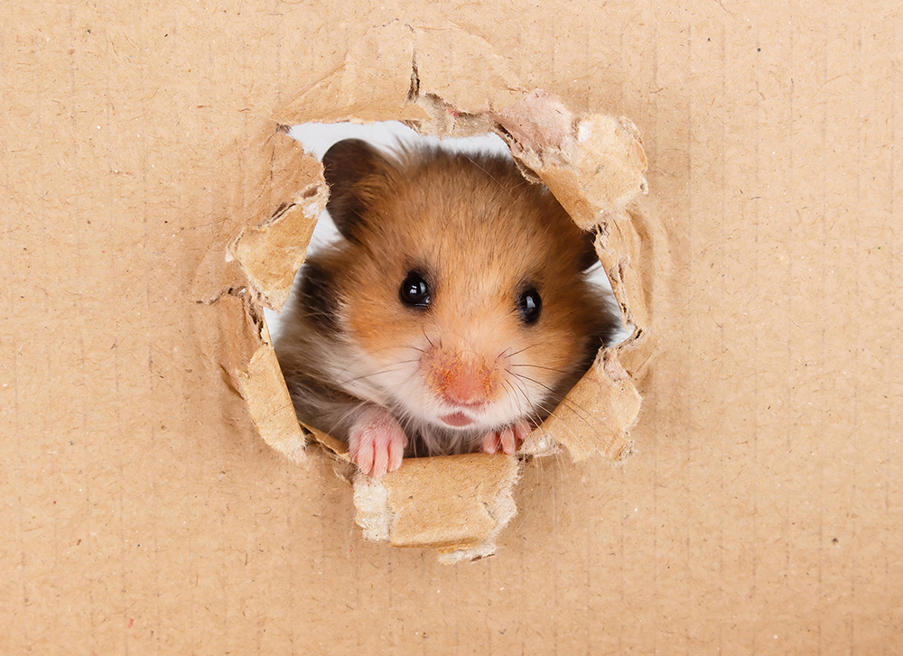

Dogs, like humans, are highly social animals and this similarity in their overall behavioural pattern accounts for their trainability,
playfulnes and ability to fit into human households and social situations.The loyalty and devotion that dogs demonstrate as part of their natural instincts as
pack animals closely mimics the human idea of love and friendship, leading many dog owners to view their pets as full-fledged family members.
Dogs have played a significant part in humans' lives for a long time. It is thought that for thousands of years, dogs have been pets.
Dogs are also referred to as The Best Friend of Man. This is because, in so many ways, dogs help men out.
Cats are an enigma that have captured the hearts of people for thousands of years.
Their mysterious personalities and adorable looks have made them an incredibly popular pet,
and according to a survey 18% of households in the UK alone are ruled by a cat.
There are so many interesting facts about cats that you probably haven’t heard of, from the world’s largest cat,
to the surprising way they walk. Keep reading to find out more.

Hamsters are nocturnal, according to the ASPCA (American Society for the Prevention of Cruelty to Animals), which means they prefer to sleep during the day.
They dig burrows in the wild, which are a network of tunnels, to live and breed in. Hamsters are also going to store food in their burrows.
Living underground keeps wild hamsters cool in hot weather.
Some hamsters are very friendly, while others are lonely. The Syrian hamster, for example, doesn't like living with other hamsters.
They are very territorial and should never be housed in a cage with other hamsters.
It's going to bite the other hamster, and maybe even kill it. Dwarf hamsters, on the other hand, are friendly and like to have a mate in the vicinity.
Wild hamsters will hibernate if the weather is cold enough. Hamsters are going to wake up from hibernation regularly to feed.
If there is not enough food to store, the hamsters will wait to hibernate until their surplus is to their taste.